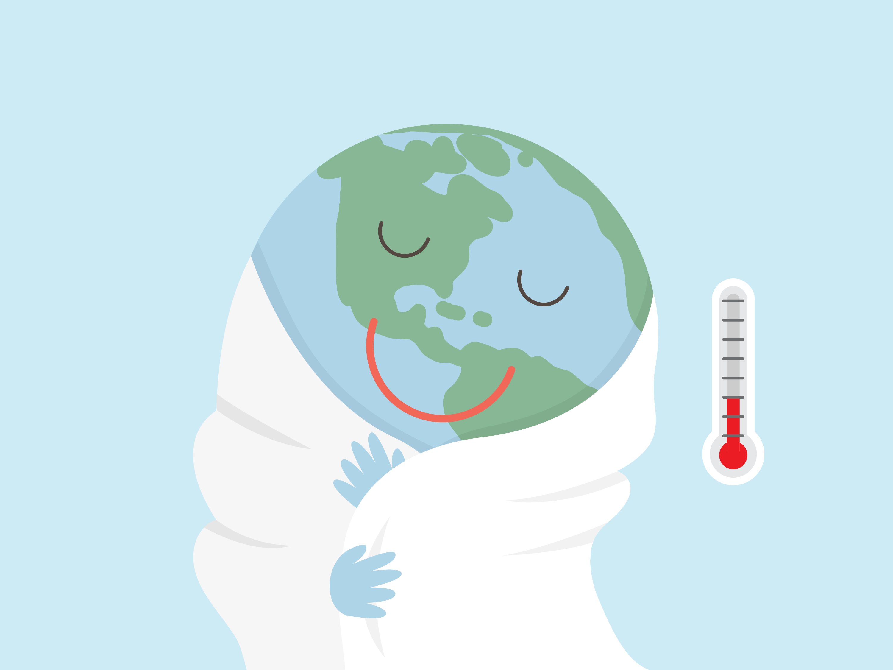
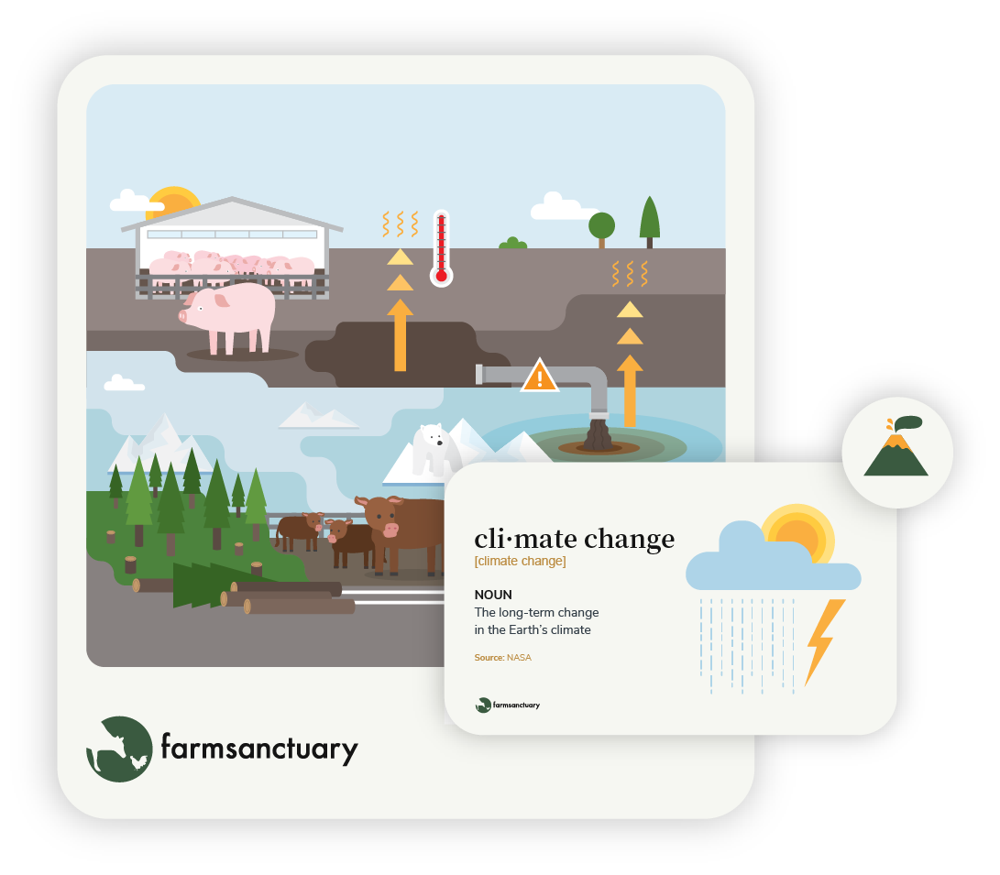
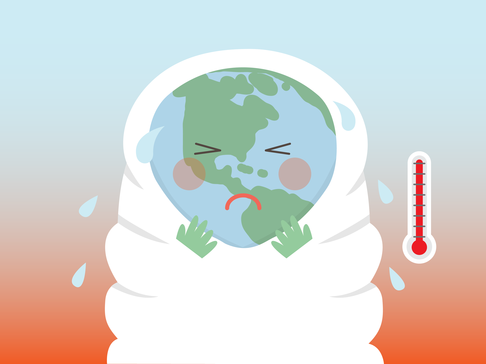

Education · Visual System · Infographics
Farm Sanctuary
Farm Sanctuary is a U.S.-based nonprofit organisation focused on protecting farm animals and advocating for their rights. Working with the Humane Education Programs Manager, I designed and illustrated the K-12 Humane Education curriculum covering lesson plans, student materials, teacher guides, and presentations across elementary, middle, and high school levels.

Challenge
The curriculum needed to address sensitive and science-ralated topics to a young audience. Concepts like animal welfare, food systems, and environmental impact had to be explained in a way that worked across the full K-12 age range, while being practical for educators in real classroom settings.
1 / 5
Approach
I developed a consistent visual language and used illustration to translate complex or sensitive topics into clear, accessible visuals that support storytelling and activate imagination. Layouts were structured to help educators navigate and use the materials efficiently, focusing on readability, hierarchy, and ease of use.

1 / 3
Outcome
The curriculum has been used by educators in schools across the U.S., reaching over 250,000 students. The program received the Excellence Award (2019) and the Educator's Choice Award (2024).